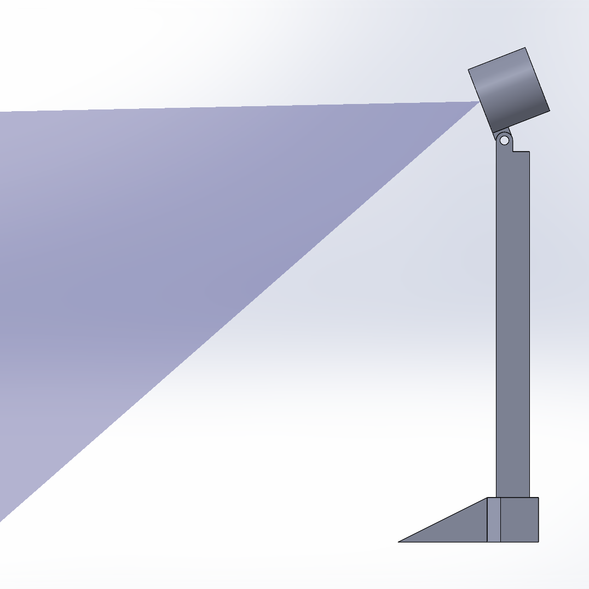
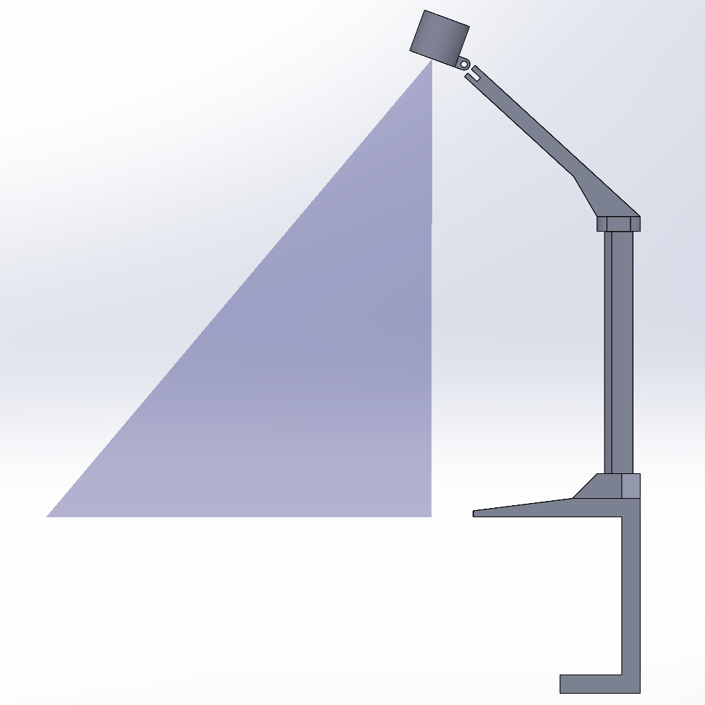
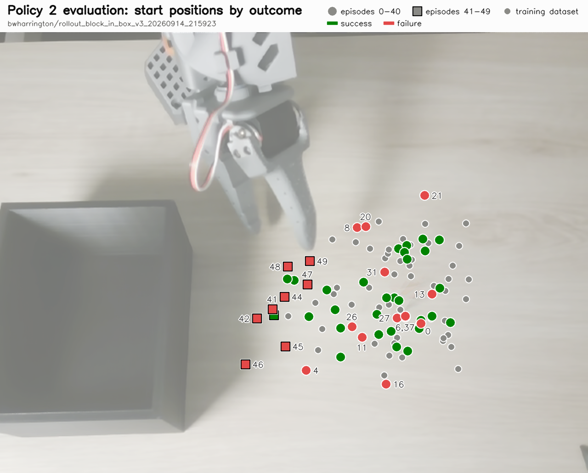
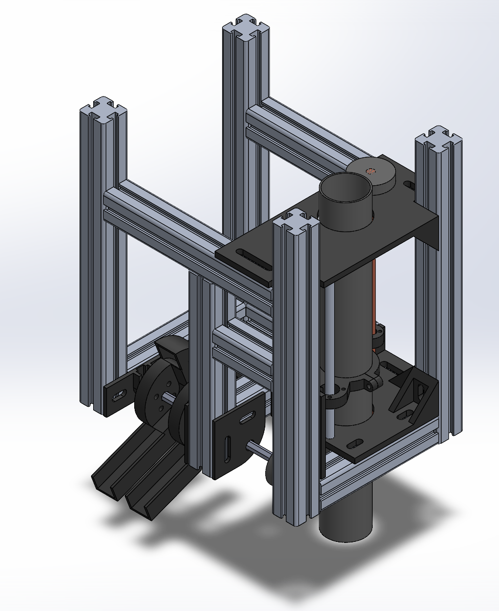
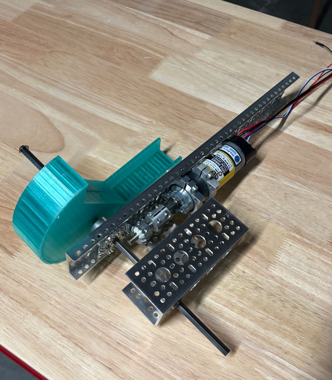
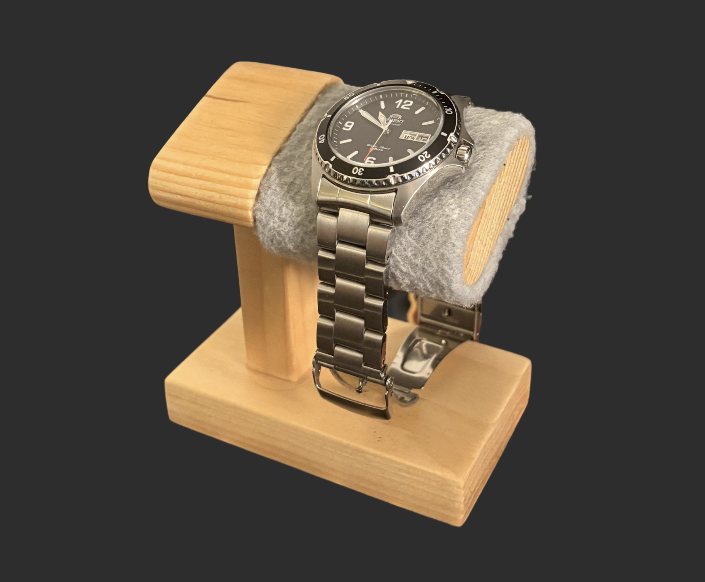
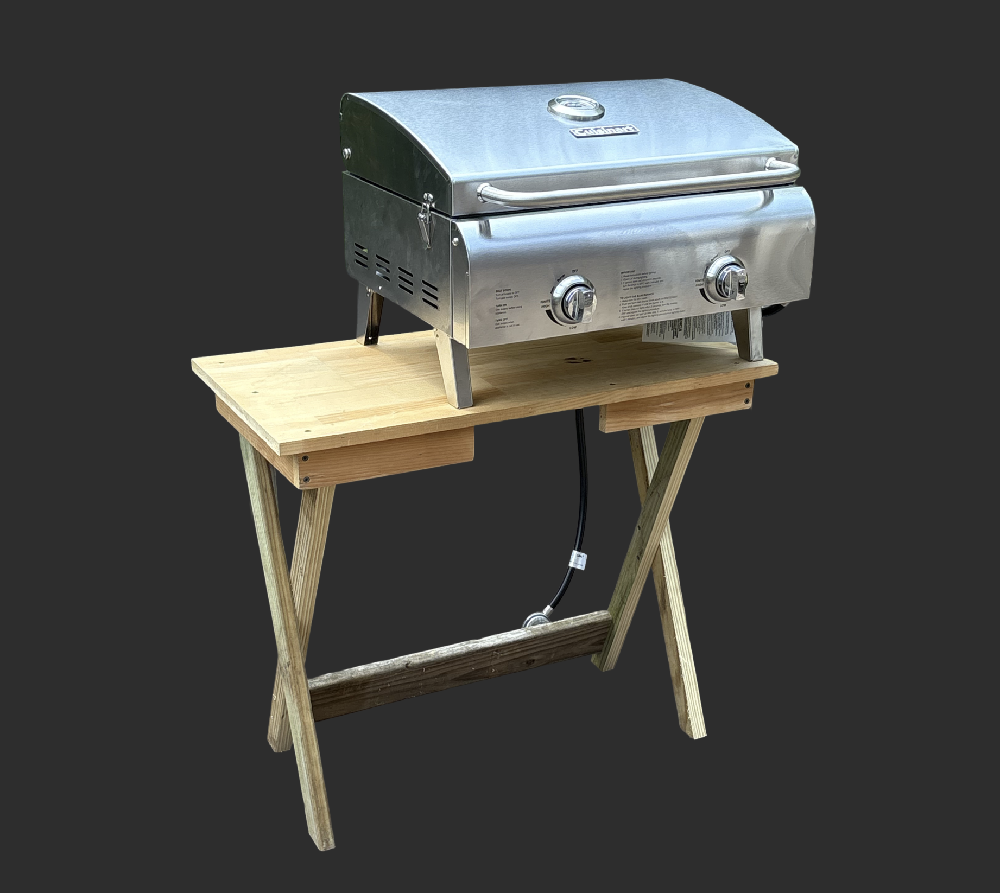
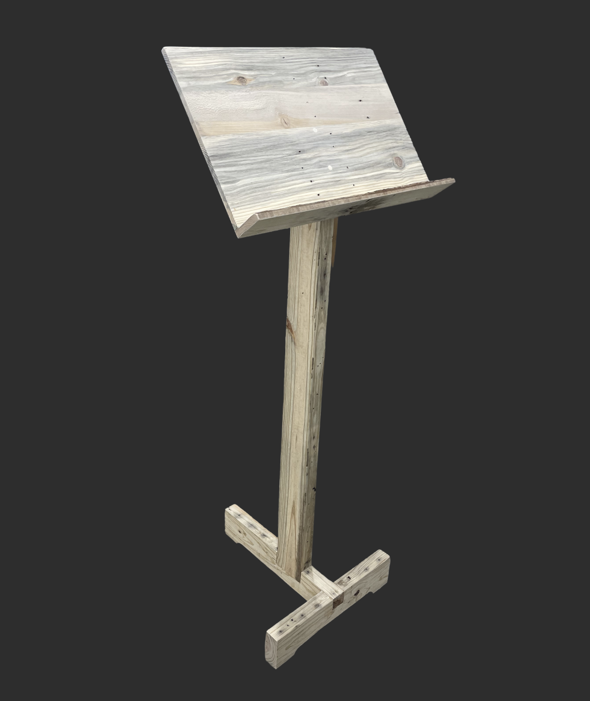

Hi,
My name is Baxter Harrington and I am studying Mechanical Engineering and Human Computer Interaction at WashU as part of the class of 2028. I built and trained a robot arm to pick and place objects, lead the science module team for our Mars rover, and designed AI agents from user research at Konica Minolta. I’m looking for Summer 2027 internships in robotics, embodied AI, or AI product.
Here's my recent work.
This page has three projects — Project 01: LeRobot SO-101 Robotic Arm, Project 02: Konica Minolta Internship, and Project 03: University Rover Challenge, where he is Science Module Engineering Lead — followed by an Odds and Ends section (three repurposed-wood projects: a watch stand, a grill table and a music stand), then a Contact card with email, LinkedIn and GitHub, and a Resume card linking to his resume (PDF).
Project 01: LeRobot SO-101 Robotic Arm
Project Phase 1: LeRobot Open Source Policy Training
Task: Pick up a 1.5 in cube from various positions and orientations and place it in an open-top box. A trial counts as a success only if the arm grasps the block and places it in the box on the first attempt. Regrasps were not possible because I removed the block immediately after any failed attempt.
I trained two Action Chunking Transformer (ACT) policies with the LeRobot (Hugging Face) toolset, each on 50 teleoperated demonstration episodes. Both were evaluated over 50 trials. Policy 1’s test used only standard placements; Policy 2’s included 9 deliberate edge cases (described below). On comparable placements, success went from 32% (16/50) to 68% (28/41).
Naming key: Policy 1 = V2 (“black_box”), Policy 2 = V3 (“block_in_box”). The Hugging Face model and dataset names use the V-numbers.
Policy 1 (version V2, “black_box”) — links; no model link is published for Policy 1
Policy 1: 16/50 successful trials (32%).
The most common failure was the gripper closing directly behind the block. I traced this to depth perception: from the original camera mount, the policy couldn’t judge how far away the block was because the camera viewed the table from such a shallow angle.
Policy 2: 29/50 successful trials (58%), including the 9 edge cases; 28/41 (68%) on standard placements.
I designed and fabricated a new camera mount with a more overhead view of the workspace. The overhead angle reduces how much the policy depends on depth estimation, and it puts more of the workspace in frame. On standard placements, the grasp-behind-the-block failure dropped from 22 occurrences (Policy 1) to 4 occurrences. Across all 50 Policy 2 trials there were 9 occurrences.


New failure mode: failures concentrate at and beyond the edge of the training data.
With this stronger policy, I tested how it would perform when the block was outside the area it was trained on. In episodes 41–49, I deliberately placed the block next to the box (marked as squares with black borders). Policy 2 succeeded in only 1 of those 9 trials. Another outlier is episode 21, which sits completely outside of every training demonstration. As the video shows, the arm never reaches beyond the area covered in training and misses the block entirely, even though the arm is physically able to reach the block.

Note on sample size: Each policy was tested on 41–50 trials, so these rates carry roughly ±13 percentage points of uncertainty.
Next Steps
Every improvement so far has required me to teleoperate more demonstrations by hand, and that is now the bottleneck. Training models in simulation will allow me to use orders of magnitude more data points, covering the whole workspace.
I’m building a MuJoCo simulation of the SO-101 wrapped in a custom Gymnasium environment. My first goal is a PPO policy (Stable-Baselines3) trained in simulation with the block’s position given directly as state. After that, the harder step is sim-to-real: switching the policy to camera input and using domain randomization so it transfers to the physical arm.
Project 02: Konica Minolta Internship - Experience Design with Agentforce
Naming key for this project: “Step 01–03” are the three phases of the design process. “Business Unit 1, 2, 3” (also written BU 1, BU 2, BU 3) are three anonymized Konica Minolta business units; their real names are not given. “Jobs 1–4” are the four jobs shared by all three business units. “A1–A4” are the IDs of the four proposed Salesforce Agentforce agents, one per shared job. “Figure 2.1” and “Figure 2.2” are the first and second figures of Project 02.
-
Step 01
Discovery: I conducted discovery interviews following the Jobs-to-be-Done framework
-
Step 02
Prototyping: I used this knowledge of workflows and painpoints to develop agent concepts, built cheaply in Claude Design
-
Step 03
Validation: I went back to the same interview participants for feedback on the prototypes
Discovery
I conducted four 1 hour discovery interviews with individuals across three business units. The interviews held a conversational format using the Jobs-to-be-Done framework to understand current workflows and pain points. The goal for this project was to design around how our sales reps actually work, not how we assumed they would use the new Agentforce platform.
Figure 2.1 contents, region by region:
- Business Unit 1 only: Call quota; Agreement recon; Renewal timing.
- Business Unit 2 only: Onboarding; Coaching; SLA tracking; Templated emails.
- Business Unit 3 only: Prospecting; Lead routing; Version currency; Partner quoting; Scoping.
- Shared by Business Units 1 and 2 (not 3): Billing relay; Lease expiry.
- Shared by Business Units 1 and 3 (not 2): Forecasting; Upsell ID.
- Shared by Business Units 2 and 3 (not 1): CSM coordination; Adoption.
- Shared by all three business units (center): Job 1, Account prep; Job 2, Worklist construction; Job 3, Cross-functional troubleshooting; Job 4, Document synthesis.
Designing & prototyping
The first step of the design was to gather and analyze the data collected through interviews. This yielded an extensive list of jobs and their scope across the three business units. Organizing these jobs into a Venn-Diagram yielded Figure 2.1, shown above.
To maximize the value proposition, I focused on creating solutions for the jobs shared across all three business units: account prep, worklist construction, cross-functional troubleshooting, and document synthesis. I mapped these shared jobs onto Agentforce solutions that could both increase efficiency and in some cases improve output quality.
-
is addressed by agentJob 1. Account prepToday: 45–90 min per meeting, assembled from 3+ systemsA1 · Account IntelligenceOne brief, three role-customized views
-
is addressed by agentJob 2. Worklist constructionToday: 1–2 hrs every Monday morning, one report at a timeA2 · Proactive WorklistRanked, cross-checked, pushed not pulled
-
is addressed by agentJob 3. Cross-functional troubleshootingToday: 15–50 min per billing issue, with no authority to fix itA3 · Workflow OrchestrationTriage, route, guard, escalate
-
is addressed by agentJob 4. Document synthesisToday: 5–15 decks a week, system data retyped by handA4 · Artifact SynthesisDrafts only, behind a QA gate
A1: in focus (agent A1, Account Intelligence)
After identifying the agents to be designed, I honed in on agent A1: Account Intelligence. This agent will provide an account summary right on the salesforce account landing page, pulling the specific metrics that the end users voiced in discovery in order to give them the view that will provide them with the most value. The discovery interviews laid bare that an agent of this nature could save each sales rep upwards of 20 minutes before each account contact point, saving an estimated 4 hours of prep time per person every week.
In addition to these efficiency gains, this agent will evaluate every account against the same criteria, removing the variability that occurs when analysis quality depends on a sales rep's time, attention, or experience.
As part of creating an optimized account brief view, additional sub-agents will eventually pull service history from a customer's devices, and data from other systems outside of salesforce.
A1 subagents (the five sub-agents that make up agent A1, Account Intelligence)
- BU 1 Account Brief (account brief view for Business Unit 1)
- BU 2 Account Brief (account brief view for Business Unit 2)
- BU 3 Account Brief (account brief view for Business Unit 3)
- Service History Q&A
- Cross-System Answers
UX rules identified
Push, don’t pull: individuals made it clear that the most impactful and useful tools are the ones that get automatically pushed to their dashboards.
One agent, three views: each of the BUs requested different views into the same core data points, so a single agent with individualized sub-agents should be utilized, as they will all be grounded in the same data
Prototyping
Using Claude Design I was able to create elaborate prototypes in HTML for the end users to get an accurate understanding of what the user experience will be of the shipped agent. This efficient prototyping process allowed me to create the individualized view for each of the business units.
Validation sessions
Returned to the same interview participants with the HTML prototypes for 30 minute feedback sessions on design utility. These sessions resulted in further design criteria for the next iteration of prototypes.
Project 03: University Rover Challenge
2027 Challenge Rulebook
Science Module Engineering Lead
Mid October 2026: Conducting trials to determine the viability of chemical tests indicating the presence of active life in soil samples. Finishing preliminary CAD designs and ordering parts.

Spring 2026 Prototyping
The Spring 2026 design yielded a design that had far too much mass to be viable for the rover. This was due to budgeting constraints making 30mm aluminum extrusion my only structural option, which I only learned about after I had started building. The only successful element of the design that will carry over to the 2027 product is the topsoil scoops, designed to deposit their soil sample at a greater distance than they collect the sample from.

Odds and Ends: Repurposed Wood Projects


